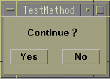

STOP_INVOCATION
This API pauses the current program execution, then opens a dialog box for asking whether to continue the current test method program execution or to terminate the current testflow execution immediately.
This API is defined in the header file /opt/hp93000/soc/prod_com/include/MAPI/ExceptionHandler.h.
Syntax
STOP_INVOCATION( );
Important points
- It is useful when you want to decide the continuity of the execution manually during debugging.
- The following dialog box opens.

If you click the "Yes" button in the dialog box, the current test method program execution is continued and goes to the next statement of this API.
If you click the "No" button, the testflow execution for all test sites is terminated. Then, the otherwise bin is used. In this case, the results are unreliable and are not logged.